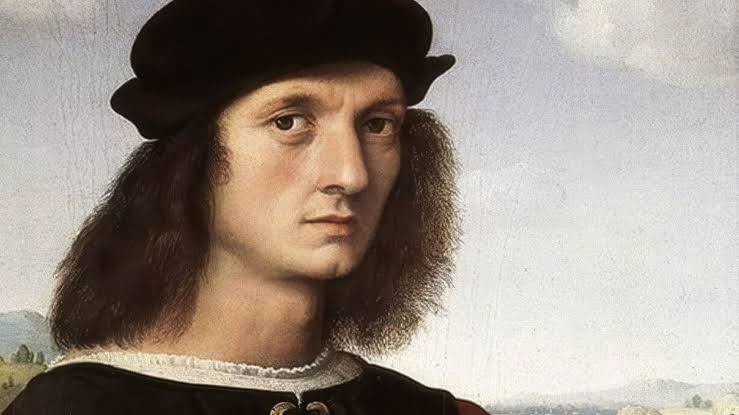
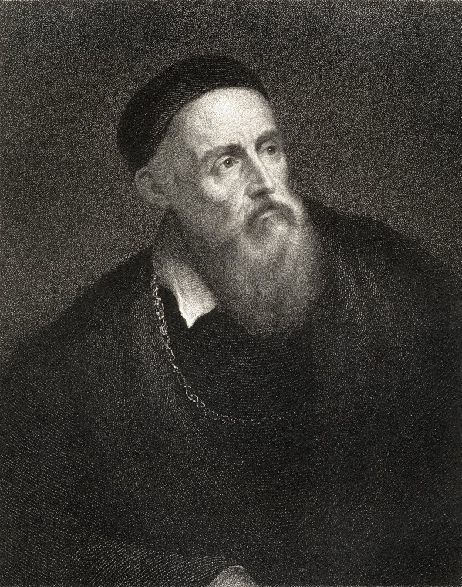

Características del Renacimiento
El Renacimiento fue un movimiento cultural que surgió en Europa entre los siglos XIV y XVII, caracterizado por el retorno a los valores del arte clásico grecorromano, el humanismo y la perspectiva en la pintura. Se inició en Italia y se expandió por toda Europa, dando lugar a un arte centrado en la belleza, la armonía y la proporción.
Principales características:
- Uso de la perspectiva para crear profundidad y realismo.
- Enfoque en la figura humana con proporciones anatómicas precisas.
- Inspiración en la antigüedad clásica.
- Dominio del claroscuro para efectos de luz y sombra.
- Representación de temas mitológicos, religiosos y retratos.
- Desarrollo de nuevas técnicas como el sfumato y el esfumado.
Principales artistas del Renacimiento
Leonardo da Vinci (1452-1519)
Uno de los artistas más influyentes del Renacimiento, conocido por su talento en múltiples disciplinas. Su obra más famosa, La Mona Lisa, es un ejemplo de su maestría en el sfumato. Otras obras destacadas incluyen La Última Cena y El Hombre de Vitruvio.

Michelangelo Buonarroti (1475-1564)
Escultor, pintor y arquitecto, Miguel Ángel dejó un legado impresionante con obras como la escultura de David y la Capilla Sixtina en el Vaticano. Su dominio del cuerpo humano y su fuerza expresiva marcaron el arte renacentista.

Rafael Sanzio (1483-1520)
Conocido por su estilo armonioso y equilibrado, Rafael creó obras como La Escuela de Atenas, un fresco que representa a los grandes filósofos de la antigüedad y que simboliza el espíritu del Renacimiento.
Tiziano Vecelli (1488-1576)
Maestro del color y el retrato, Tiziano destacó por su uso del óleo en obras como Venus de Urbino y sus retratos de la nobleza europea. Su influencia se extendió a los artistas barrocos posteriores.
Importancia del Renacimiento en la Historia del Arte
El Renacimiento supuso una transformación en la forma en que el arte era concebido, alejándose de los estilos medievales y adoptando una visión más científica y humanista del mundo. La invención de la imprenta ayudó a la difusión del conocimiento, permitiendo que las ideas renacentistas se expandieran por toda Europa.
Este periodo también influyó en la arquitectura, con figuras como Filippo Brunelleschi, quien diseñó la cúpula de la Catedral de Florencia, y Andrea Palladio, cuyo estilo inspiró la arquitectura neoclásica.